8.8.3.15 IfcExtrudedAreaSolid
8.8.3.15.1 Semantic definition
The IfcExtrudedAreaSolid is defined by sweeping a cross section provided by a profile definition. The direction of the extrusion is given by the ExtrudedDirection attribute and the length of the extrusion is given by the Depth attribute. If the planar area has inner boundaries (holes defined), then those holes shall be swept into holes of the solid.
The resulting solid is positioned by the IfcSweptAreaSolid.Position relative to the object coordinate system. If provided, it allows to reposition the extruded solid. If not provided, it defaults to the current object coordinate system. The ExtrudedDirection is given within the position coordinate system as defined by IfcSweptAreaSolid.Position. The extruded direction can be any direction which is not perpendicular to the z axis of the position coordinate system.
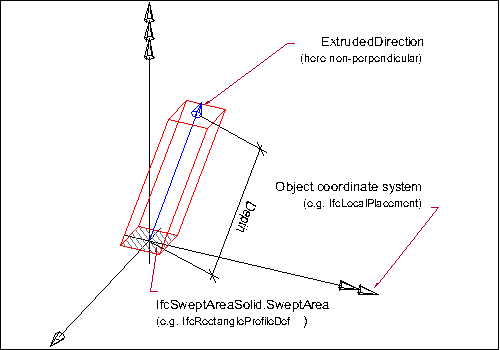
- The profile to be swept is defined:
- as a 2D primitive, here IfcRectangleProfileDef, that is placed relative to the xy plane of object coordinate system
- since no 2D profile position coordinate system is provided, here IfcParameterizedProfileDef.Position = NIL, the profile is positioned without transformation into the xy plane of the object coordinate system (by default, centric at 0.,0. with no rotation)
- The resulting swept solid is not repositioned, as no position coordinate system is provided, here IfcSweptAreaSolid.Position = NIL.
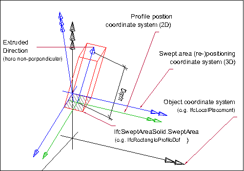
- The profile to be swept is defined:
- as a 2D primitive, here IfcRectangleProfileDef, that is placed relative to the xy plane of object coordinate system
- a 2D profile position coordinate system is provided that positions the profile relative to the xy plane (here at a corner of the rectangle)
- The resulting swept solid is repositioned, here it is moved into local z and rotated by 15' along the y axis.
Texture use definition
For side faces, textures are aligned facing upright continuously along the sides with origin at the first point of an arbitrary profile, and following the outer bound of the profile counter-clockwise (as seen from above). For parameterized profiles, the origin is defined at the +Y extent for rounded profiles (having no sharp edge) and the first sharp edge counter-clockwise from the +Y extent for all other profiles. Textures are stretched or repeated on each side along the outer boundary of the profile according to RepeatS. Textures are stretched or repeated on each side along the extrusion axis according to RepeatT.
For top and bottom caps, textures are aligned facing front-to-back, with the origin at the minimum X and Y extent. Textures are stretched or repeated on the top and bottom to the extent of each face according to RepeatS and RepeatT.
For profiles with voids, textures are aligned facing upright along the inner side with origin at the first point of an arbitrary profile, and following the inner bound of the profile clockwise (as seen from above). For parameterized profiles, the origin of inner sides is defined at the +Y extent for rounded profiles (having no sharp edge such as hollow ellipses or rounded rectangles) and the first sharp edge clockwise from the +Y extent for all other profiles.

8.8.3.15.2 Entity inheritance
-
- IfcSolidModel
- IfcAnnotationFillArea
- IfcBooleanResult
- IfcBoundingBox
- IfcCartesianPointList
- IfcCartesianTransformationOperator
- IfcCsgPrimitive3D
- IfcCurve
- IfcDirection
- IfcFaceBasedSurfaceModel
- IfcFillAreaStyleHatching
- IfcFillAreaStyleTiles
- IfcGeometricSet
- IfcHalfSpaceSolid
- IfcLightSource
- IfcPlacement
- IfcPlanarExtent
- IfcPoint
- IfcSectionedSpine
- IfcSegment
- IfcShellBasedSurfaceModel
- IfcSurface
- IfcTessellatedItem
- IfcTextLiteral
- IfcVector
8.8.3.15.3 Attributes
| # | Attribute | Type | Description |
|---|---|---|---|
| IfcRepresentationItem (2) | |||
| LayerAssignment | SET [0:1] OF IfcPresentationLayerAssignment FOR AssignedItems |
Assignment of the representation item to a single or multiple layer(s). The LayerAssignments can override a LayerAssignments of the IfcRepresentation it is used within the list of Items. |
|
| StyledByItem | SET [0:1] OF IfcStyledItem FOR Item |
Reference to the IfcStyledItem that provides presentation information to the representation, e.g. a curve style, including colour and thickness to a geometric curve. |
|
| IfcSolidModel (1) | |||
| * | Dim | IfcDimensionCount |
This attribute is formally derived. The space dimensionality of this class, it is always 3. |
| IfcSweptAreaSolid (2) | |||
| 1 | SweptArea | IfcProfileDef |
The surface defining the area to be swept. It is given as a profile definition within the xy plane of the position coordinate system. |
| 2 | Position | OPTIONAL IfcAxis2Placement3D |
Position coordinate system for the resulting swept solid of the sweeping operation. The position coordinate system allows for re-positioning of the swept solid. If not provided, the swept solid remains within the position as determined by the cross section or by the directrix used for the sweeping operation. |
| Click to show 5 hidden inherited attributes Click to hide 5 inherited attributes | |||
| IfcExtrudedAreaSolid (2) | |||
| 3 | ExtrudedDirection | IfcDirection |
The direction in which the surface, provided by SweptArea is to be swept. |
| 4 | Depth | IfcPositiveLengthMeasure |
The distance the surface is to be swept along the ExtrudedDirection. |
8.8.3.15.4 Formal propositions
| Name | Description |
|---|---|
| ValidExtrusionDirection |
The ExtrudedDirection shall not be perpendicular to the local z-axis. |
|
|
8.8.3.15.5 Examples
-
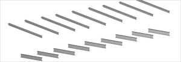
Figure 8.8.3.15.D -
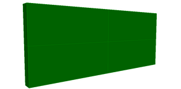
Figure 8.8.3.15.E -
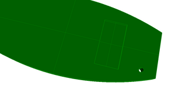
Figure 8.8.3.15.F -
Figure 8.8.3.15.G -
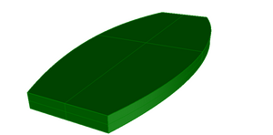
Figure 8.8.3.15.H -
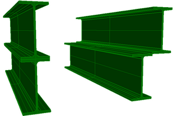
Figure 8.8.3.15.I -
Figure 8.8.3.15.J -
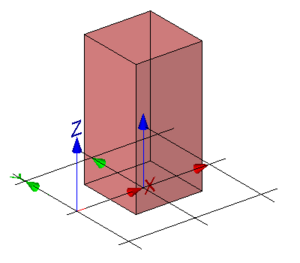
Figure 8.8.3.15.K -
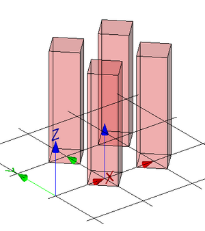
Figure 8.8.3.15.L -
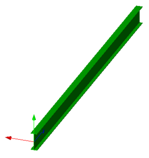
Figure 8.8.3.15.M -
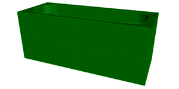
Figure 8.8.3.15.N -
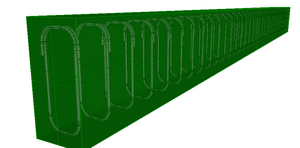
Figure 8.8.3.15.O -
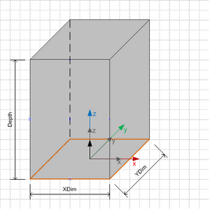
Figure 8.8.3.15.P -
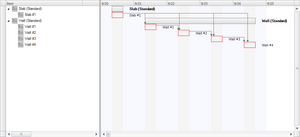
Figure 8.8.3.15.Q -
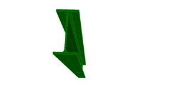
Figure 8.8.3.15.R -
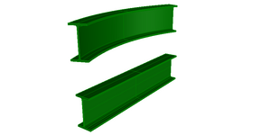
Figure 8.8.3.15.S -
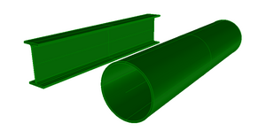
Figure 8.8.3.15.T -
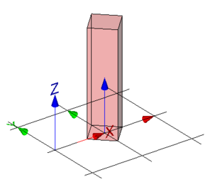
Figure 8.8.3.15.U -
Figure 8.8.3.15.V -
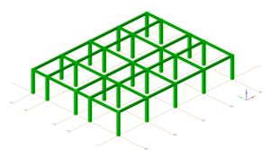
Figure 8.8.3.15.W
8.8.3.15.6 Formal representation
ENTITY IfcExtrudedAreaSolid
SUPERTYPE OF (ONEOF
(IfcExtrudedAreaSolidTapered))
SUBTYPE OF (IfcSweptAreaSolid);
ExtrudedDirection : IfcDirection;
Depth : IfcPositiveLengthMeasure;
WHERE
ValidExtrusionDirection : IfcDotProduct(IfcRepresentationItem() || IfcGeometricRepresentationItem() || IfcDirection([0.0,0.0,1.0]), SELF.ExtrudedDirection) <> 0.0;
END_ENTITY;